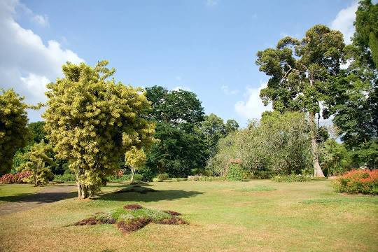
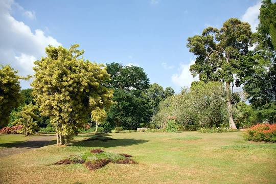

The Central Province is one of the nine provinces of Sri Lanka, the first level administrative division of the country. The Central Province is primarily in the central mountainous terrain of Sri Lanka. It is the 6th largest province by area and is home to 2.5 million people.The Central Province is primarily in the central mountainous terrain of Sri Lanka. It is the 6th largest province by area and is home to 2.5 million people. ... The Central Province attracts many tourists, with hill station towns such as Gampola, Hatton and Nuwara Eliya.The Central Province is located in the central hills of Sri Lanka comprising of three administrative districts:Kandy, Matale and Nuwara-Eliya. The land area of the Province is 5,575 km2 which is 8.6% of the total land area of Sri Lanka. The Province lies on 6.6°- 7.7° northern latitudes and between 80.5°-80.9° eastern longitudes. The elevation in the province ranges from 600 ft to over 6000 ft above the sea level. The province is bordered on the north by the North-Central Province, on the east by the River Mahaweli,on the south by Uma Oya and the mountain range of Adam’s Peak, Kirigalpotta and Thotapala and on the west by the mountain ranges Dolosbage and Galagedera. Kandy is the second largest city in Sri Lanka and the main city of the Central Province as well as the Kandy District and this ancient city lies at an elevation of 465 metres (1,526 ft) above the sea level. Kandy is the last capital of the ancient kingdom in Sri Lanka. It is one of the most sacred cities in Sri Lanka because of the Temple of the Sacred Tooth Relic and also is one of the most beautiful cities in the island. The city is surrounded by verdant mountains and the lake and the adjacent Temple of the Sacred Tooth Relic add more beauty to the city.

 
